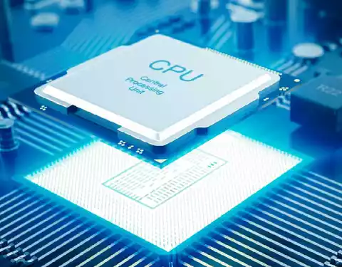

La Computadora Y Sus Partes
¿Que es la computadora?
un computador, computadora u ordenador es una maquina digital programable, de funcionamiento electronico,capaz de almacenar informacion y tratarla automaticamente mediante operaciones matematicas.

La enorme cantidad de componentes de una computadora pueden agruparse en dos categorias separadas, que son:
- Hardware:
La parte fisica y tangible del sistema, o sea, sus componentes.
- Software:
La parte intangible, digital, abstracta, del sistema.
Hardware
El hardware son aquellas partes fisicas de un sistema operativo tales como sus componentes electricos, electronicos, electromecanicos y cualquier elemento fisico que este involucrado.ejemplo de hardware:
- Procesador:
El procesador(CPU, Central Processing Unit) es el componente mas importante dentro del PC, Es el cerebro de todo el funcionamiento del sistema.

- Memoria RAM:
La memoria de computadora o la memoria de acceso aleatorio(RAM)es su almacenamiento de datos a corto plazo del sistema.

- Memoria ROM:
Sus siglas tienen su origen del ingles Read Only Memory o memoria de solo de lectura.
- Memoria Cache:
Es una capa de almacenamiento de datos de alta velocidad que almacena un subconjunto de datos.
- Tarjeta Madre:
Es la columna vertebral que une los componentes de lacomputadora en un mismo punto y les permite comunicarse entre si.

- Tarjeta Grafica:
Es una Placa de circuitos informaticos que se encargan de procesar los datos que leenvia el procesador para convertirlos en informacion comprensible para el usuario.
- Disco Duro
Es un tipo de tecnologia que alamcena el sistema operativo, las aplicaciones y los archivos de datos que su computadora usa para un funcionamiento normal.
- Tarjeta de Sonido
Cuando conectas los auriculares a tu pc, los estas conectando a la salida de la tarjeta sonido y un microfono lo conectaras a la entrada.
Software
estos son los programas informaticos que hacen posible la ejecucion de tareas especificas dentro de un computador. Los sistemas operativos , aplicaciones, navegadores web, juegos o programas. Estas caracteristicas siempre trabajan de la mano. Ejemplo de Software
- Software de Aplicacion
nos permite realizar todo tipo de tareas, ya sean laborales, de entretenimiento, de diseño grafico, para navegar por intrnet, etc.

- Software de Sistemas
Es una de las grandes clasificaciones que le podemos dar al software que corre en un dispositivo, siendo su contraparte el software de aplicacion.

- Software de Programacion
Es un conjunto de herramientas y utilidades , utilizadas para el desarrollo, programacion o creacion de programas.